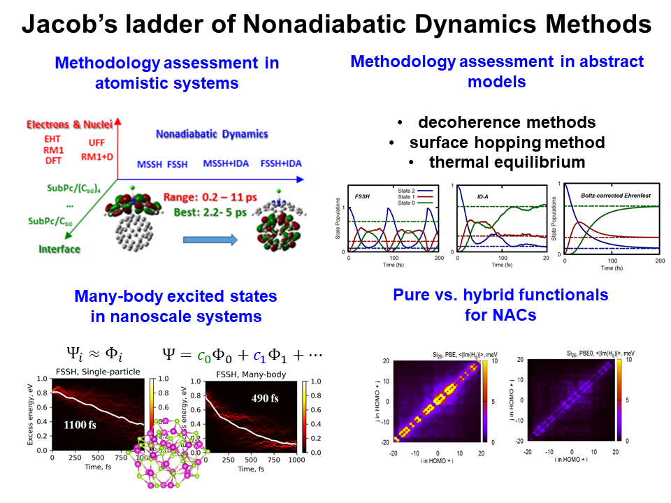
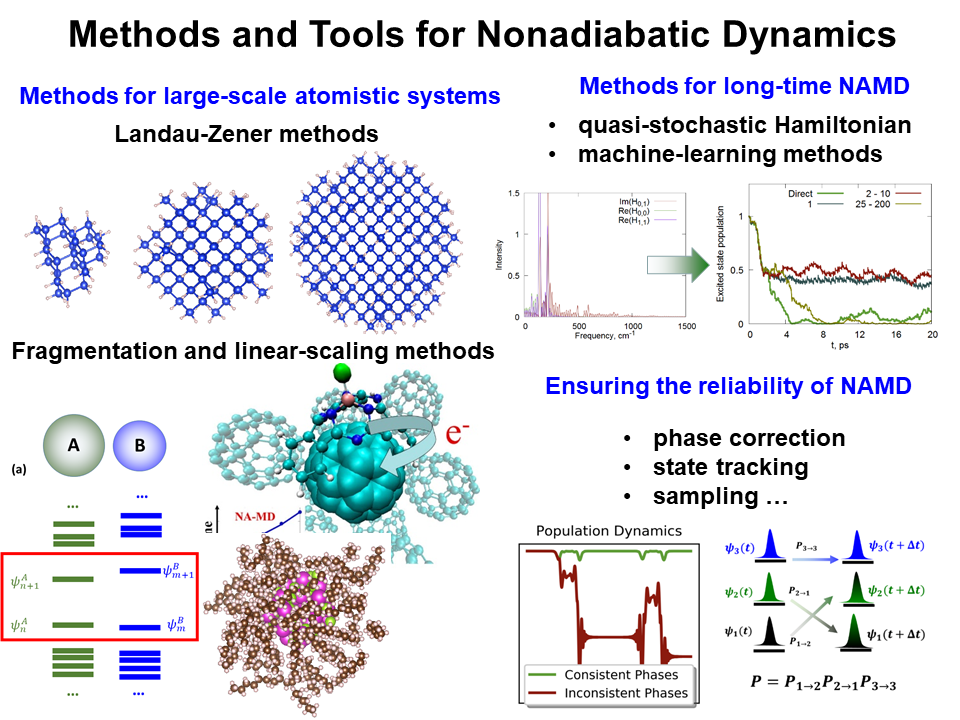
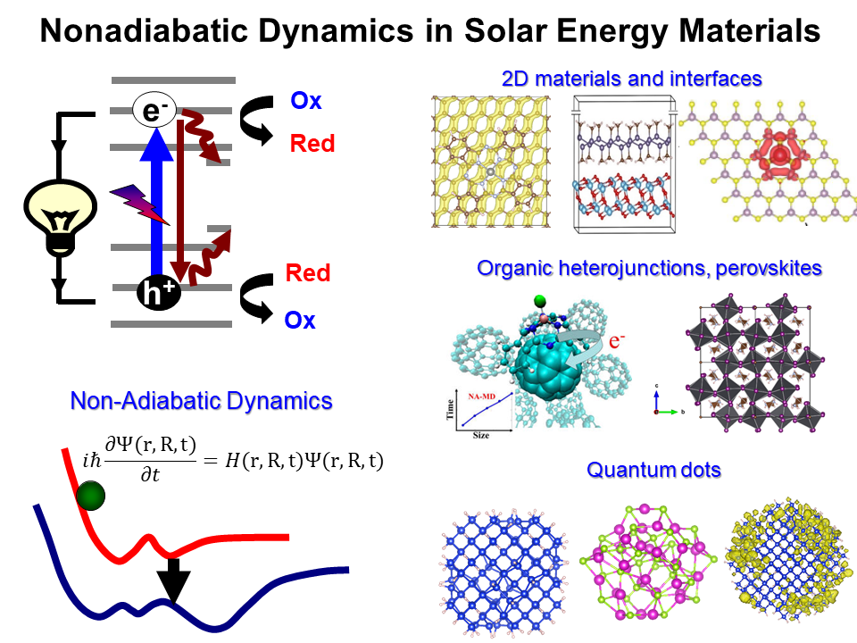

01Theory and assessment
We develop and benchmark quantum-classical approaches, studying coherence, correlations, representation invariance, and the limits of common approximations.
Read about theoryTheoretical and Computational Quantum Dynamics
We develop quantum and quantum-classical theories, open-source software, and conduct atomistic simulations to understand nonadiabatic processes in molecules, nanomaterials, and energy materials.
What we investigate
Our work connects formal theory, efficient computational methodology, and applications where electronic and nuclear motion cannot be separated.

01We develop and benchmark quantum-classical approaches, studying coherence, correlations, representation invariance, and the limits of common approximations.
Read about theory
02We create scalable algorithms and open implementations for nonadiabatic dynamics, state tracking, machine learning, and electronic-structure workflows.
Explore software
03We model charge and energy transfer in quantum dots, two-dimensional materials, interfaces, perovskites, fullerenes, and molecular systems.
See applicationsFeatured software
Libra brings together model Hamiltonians, electronic-structure interfaces, nonadiabatic molecular dynamics, trajectory surface hopping, decoherence, and data-analysis tools in an open development environment.
The project supports both methodological research and reproducible simulations of realistic molecular and materials systems.
Recent work
Recent advances in benchmarking nonadiabatic methods and understanding relaxation in dense excited-state manifolds.
Shakiba, Han, Mukherjee, and Akimov · Journal of Chemical Physics 164, 104110
Yasin, Shakiba, and Akimov · Journal of Physical Chemistry Letters 17, 2812–2822
Akimov · Journal of Chemical Theory and Computation 21, 11821–11846
Join the group
We welcome motivated students interested in chemistry, physics, mathematics, scientific computing, and materials science. Programming experience is helpful, but curiosity and readiness to learn matter most.
Contact the group